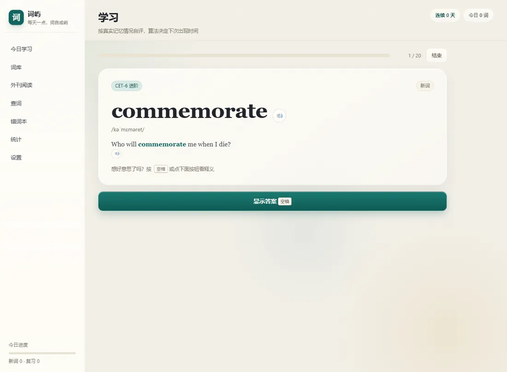
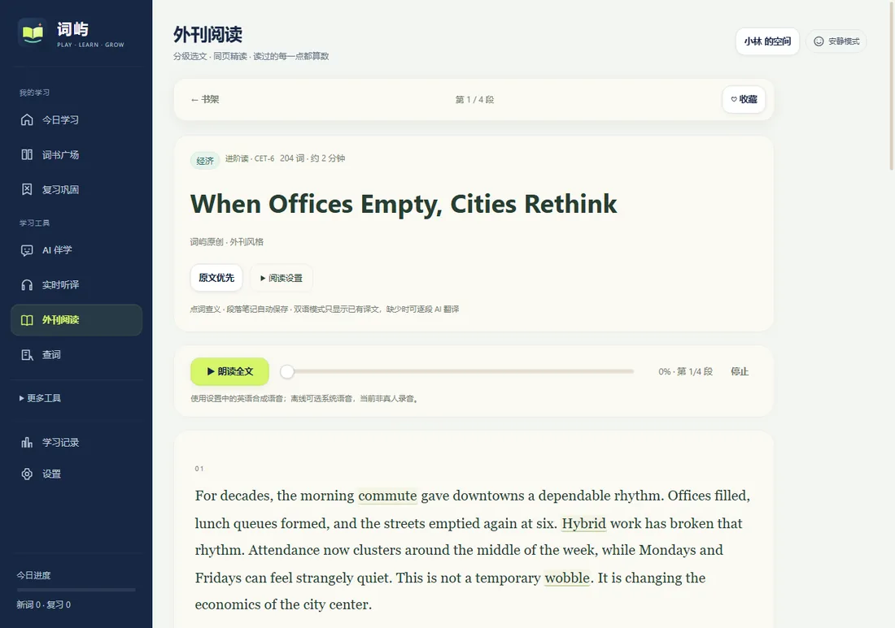
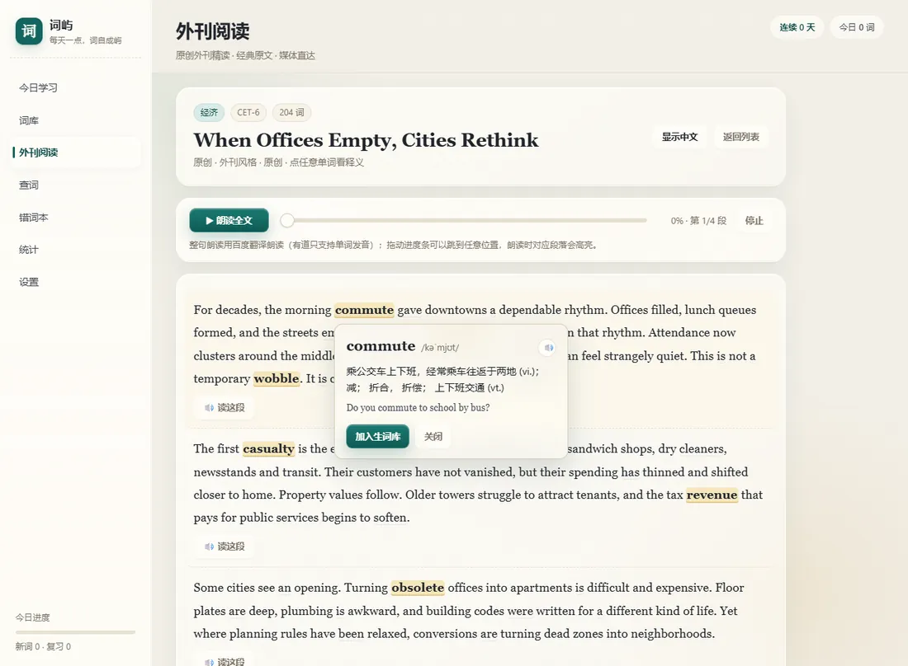
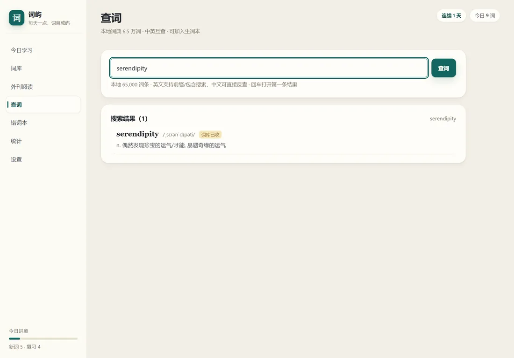

九本词库，一座词岛
CET-4/6、考研、雅思、托福、GRE，加上牛津 3000/5000 与柯林斯五星。SM-2 间隔重复，只复习该复习的词。
离线优先 · 打开即学 · v3.9.3
词屿是一款离线可用的英语学习桌面应用：九本考试与牛津词库、65,000 词本地词典、52 篇外刊与每日新闻、接近真人的朗读。不注册、不上传，学习记录只留在你的电脑里。
为什么是词屿
不追求花哨的排行榜，只把「今天该复习哪几个词」这件事做顺。
CET-4/6、考研、雅思、托福、GRE，加上牛津 3000/5000 与柯林斯五星。SM-2 间隔重复，只复习该复习的词。
输入即查，中英互查；音标、词性、释义与例句离线可用，遇到生词一键收进「查词生词」词库。
52 篇双语精读 + 每天自动更新的 NASA 新闻；点任意单词看释义，整篇可听，进度条随时拖动。
粘贴任意英文文章，一键标出哪些词形练过、哪些没练过，并算出练习记录覆盖率。文章只在内存里分析，关闭即消失。
单词用有道美音/英音，整句用微软在线神经语音（5 种音色）或百度翻译；断网自动回退系统语音。
翻卡、四选一、例句填空、拼写、听写；每天小测、斩词与连续打卡，把「认识」变成「记住」。
浅色纸感 + 液态玻璃质感，指针高光与弹簧动效；可在设置里一键关闭，低配电脑也流畅。
界面




v3.9.3 Enhanced · x64 · 127 MB
点击此处下载安装包支持 Windows 10 / 11。安装包为自签名证书，SmartScreen 可能提示「未知发布者」：点「更多信息 → 仍要运行」。下载地址来自 GitHub Releases，浏览器支持断点续传。
Apple 芯片 / Intel · 需在 macOS 上打包
查看说明macOS 安装包必须在 Mac 上构建（Apple 工具链限制）。项目已带一键构建脚本与 GitHub Actions 工作流，拿到 Mac 或云端即可生成 DMG。
常见问题
目前个人使用免费。商业使用或二次分发请联系站点邮箱说明用途；源码许可见仓库的 LICENSE。
跳到 GitHub Releases 的最新安装包直链（releases/latest/download/WordIsle-Enhanced-Setup-3.9.3.exe）。如果浏览器拦截了跳转，也可以直接打开 Releases 页面 手动下载。
把文章切成一个个英文词，逐个查询本机的练习记录：绿色表示这个「词形」练过，橙色表示没有记录。按原词形精确匹配，不推断复数、时态等变化；「练过」不代表「已掌握」，「没记录」也不代表「不认识」。
核心功能（词库、查词、阅读、练习、复习、词汇地图）完全离线。朗读与每日新闻需要网络；断网时朗读自动回退到系统语音。
不会。没有账号系统，学习进度、生词本、设置都保存在本机，可用「设置 → 导出备份」迁移。文章词汇地图里粘贴的正文只在内存中处理，关闭后不保存。
当前使用自签名代码签名证书，3.9.3 Enhanced 是重新打包的版本、没有重新签名。选择「更多信息 → 仍要运行」即可；要彻底消除提示需要购买 OV/EV 代码签名证书。
新版本沿用原程序的数据路径，可能读取和修改原有学习数据。升级前请先在原程序里「设置 → 导出备份」，再安装新版本。
源代码已适配 macOS（双架构、标准菜单、DMG 配置）。但 macOS 安装包必须在 Mac 上构建，项目里提供了 build-macos.sh 与 GitHub Actions 工作流，可自行生成 DMG。
可以。设置里支持导入 CSV（单词,音标,词性,释义,例句,翻译）或本应用导出的 JSON 备份；也可以把查词时收藏的词当普通词库练习。
当前不接入任何统计或广告脚本。如果之后启用隐私友好的访问统计，会在本页说明。
许可与致谢
词库释义与语料来自开源项目与公共领域作品；不是牛津词典原文。